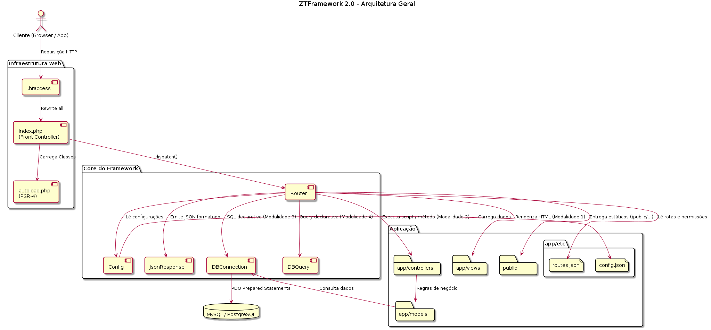
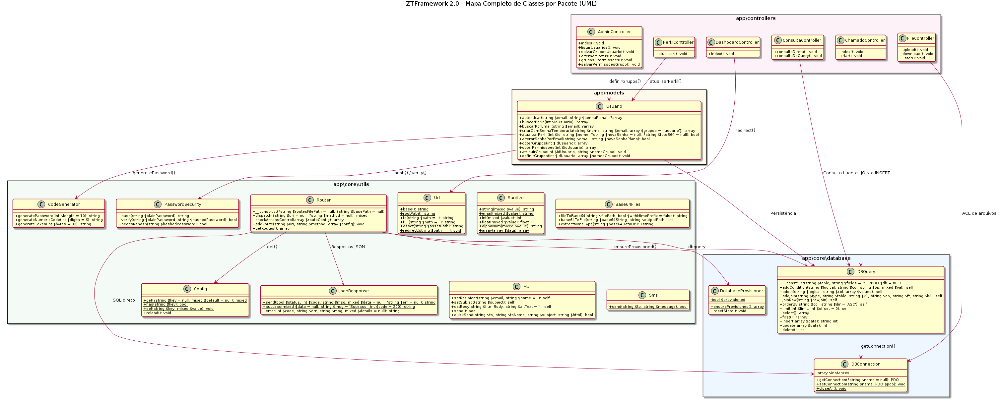
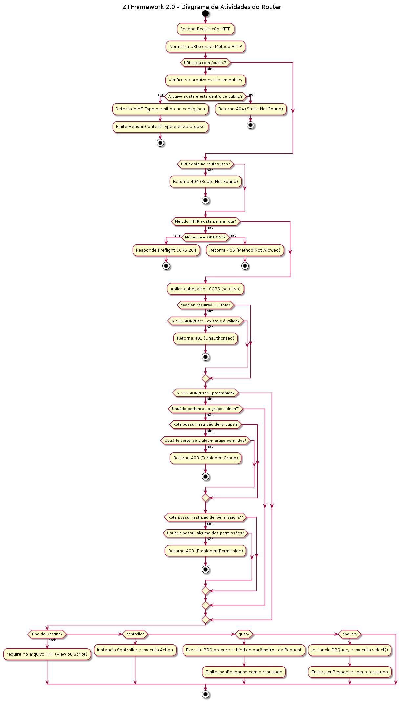
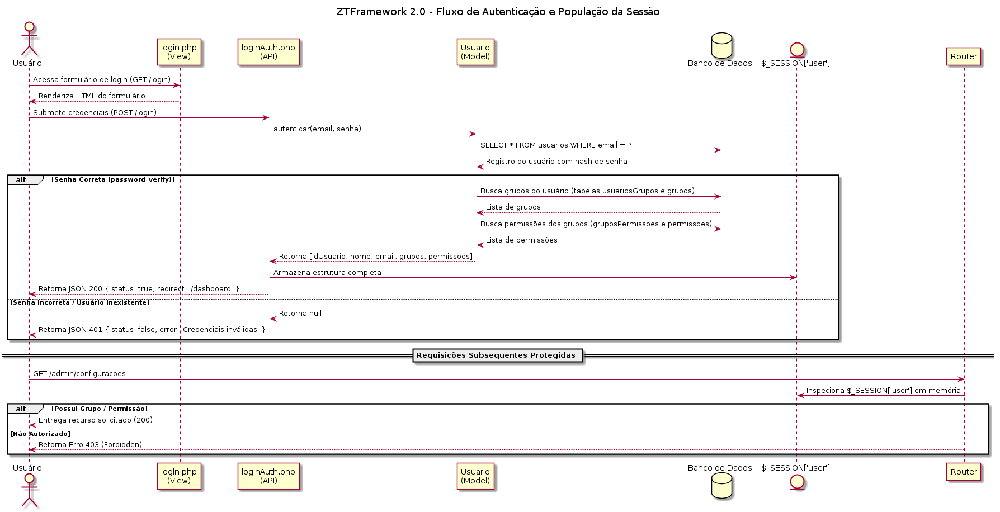
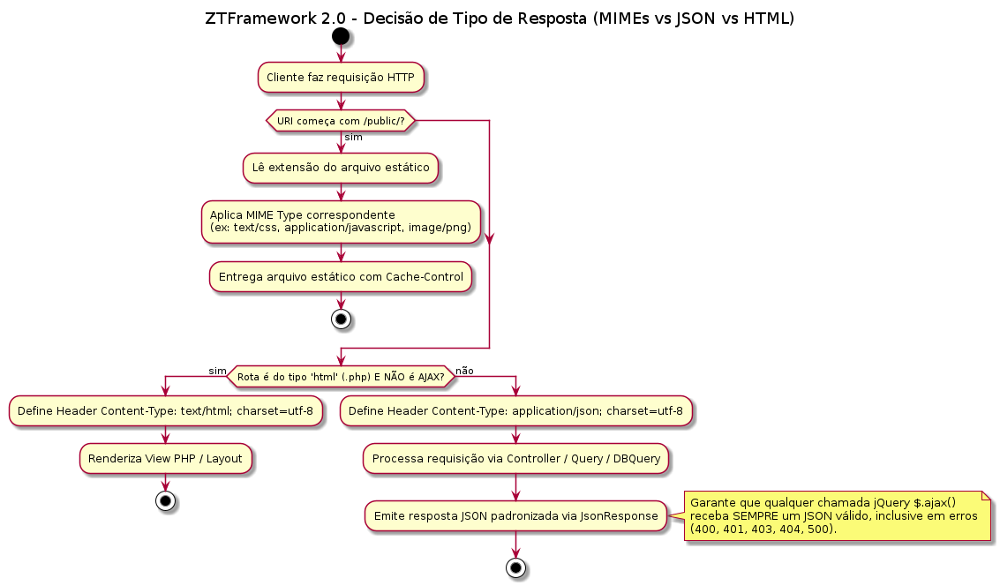
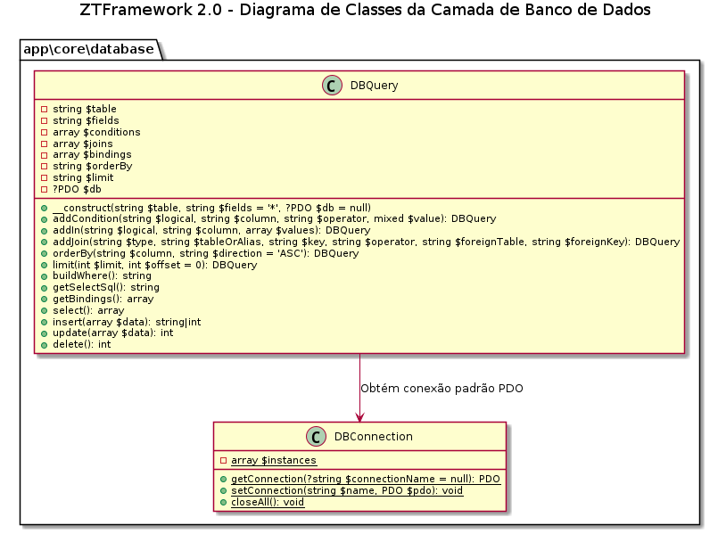
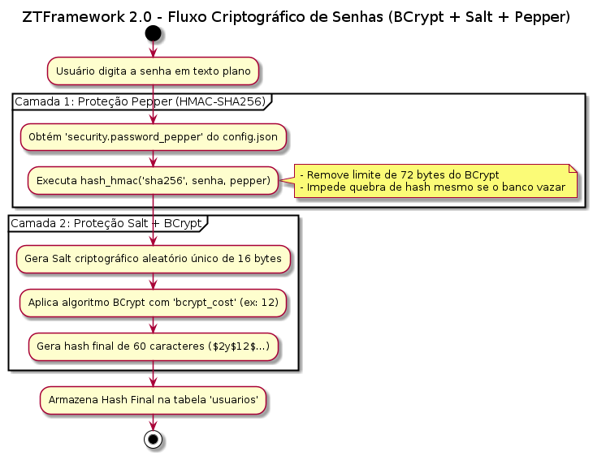
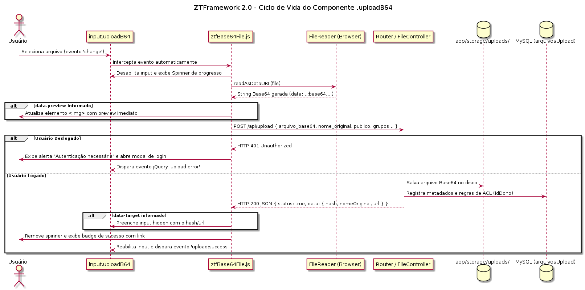
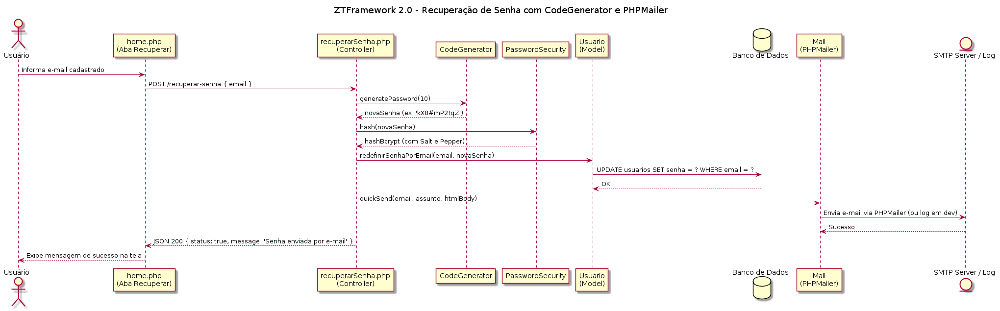

1. Visão Geral, Filosofia & Arquitetura Geral
O Zait Tiny Framework 2.0 foi concebido pelos professores Drº Cleber S. Oliveira e Drª Marcia Aparecida Silva Bissaco para aliar altíssimo desempenho com clareza didática no ensino e na prática de engenharia de software moderna em PHP 8.2+.
Seus pilares fundamentais de engenharia são:
- Arquitetura Desacoplada e Transparente: Cada camada tem responsabilidade única e bem definida, sem "caixas-pretas".
- Tipagem Forte Estrita: Uso mandatório de
declare(strict_types=1);em todos os arquivos do núcleo. - Segurança por Padrão (Security by Design): Prepared Statements nativos via
DBQuery, senhas com Pepper HMAC-SHA256 + BCrypt e uploads 100% em Base64 com ACL em 5 camadas. - Auto-Provisionamento no Boot: O próprio framework verifica e constrói automaticamente o banco de dados e suas tabelas caso não existam.
Arquitetura Geral de Componentes do ZTFramework 2.0

- O Cliente (Browser/App) envia a requisição HTTP, que é reescrita pelo
.htaccesspara o Front Controllerindex.php. - O
index.phpcarrega oautoload.php(PSR-4 + Recursivo) e invocaRouter::dispatch(). - O Router lê as configurações globais via
Config(app/etc/config.json) e o mapa de rotas/ACL (app/etc/routes.json). - O despacho ocorre em uma das 4 modalidades: (1) Renderização direta de View HTML, (2) Execução de Controller OO → Model → Banco, (3) SQL Declarativo direto no JSON, ou (4)
DBQueryDeclarativa.
2. Estrutura de Diretórios & Mapa Completo de Classes (UML)
O framework organiza seus componentes em 4 pacotes principais sob app/:
app/core/database/: Camada de persistência e auto-provisionamento (DBConnection,DatabaseProvisioner,DBQueryescript.sql).app/core/utils/: Utilitários de infraestrutura, roteamento e segurança (Config,Url,Router,Sanitize,JsonResponse,PasswordSecurity,CodeGenerator,Base64Files,Mail,Sms).app/models/: Modelos de domínio e regras de autenticação/ACL (Usuario).app/controllers/: Controladores da aplicação (DashboardController,PerfilController,AdminController,FileController,ChamadoController,ConsultaControllere scripts de autenticação).app/views/: Camada de apresentação em Bootstrap 5 (home.php,main*.php,admin.php,chamados.phpe páginas de erro401,403,404,500,db_error).
Mapa Completo de Classes e Relacionamentos por Pacote (UML)

app\core\database em azul, app\core\utils em verde, app\models em âmbar e app\controllers em rosa), destacando seus métodos públicos e dependências diretas. Clique na imagem para ampliar.
3. Autoloader Recursivo Inteligente (autoload.php)
O arquivo autoload.php garante que qualquer classe do projeto ou de terceiros seja localizada sem necessidade de múltiplos require manuais:
- Integração Composer (
vendor/autoload.php): Carrega pacotes externos (comoPHPMailer) e o classmap otimizado de 28 classes. - Resolução Direta PSR-4: Traduz
app\core\utils\Urldiretamente paraapp/core/utils/Url.phpem tempo $O(1)$. - Fallback Recursivo Case-Insensitive: Caso um arquivo tenha diferença de maiúsculas/minúsculas em servidores Linux, indexa recursivamente os diretórios de
app/em cache estático. - Helpers Globais: Expõe as funções auxiliares
url(),asset()erootPath()apoiadas na classeapp\core\utils\Url.
4. Roteamento Declarativo Completo (Router 2.0) & Diagramas de Fluxo
O Router 2.0 centraliza todas as rotas, verbos HTTP, regras de sessão e permissões (ACL) no arquivo app/etc/routes.json.
Fluxo Completo de Decisão e Despacho do Router 2.0

/public/ → Valida existência da rota (404) e do verbo HTTP (405 / Preflight 204) → Aplica políticas de CORS → Executa a guarda de Sessão (401) e ACL de Grupos/Permissões (403) → Despacha para path, controller, query ou dbquery.
4.1 Anatomia Completa de uma Rota Declarativa
{
"/exemplo/completo/{id}": {
"get": {
"responseType": "json",
"controller": "MeuController",
"action": "detalhes",
"session": {
"required": true,
"keys": ["idUsuario", "email"]
},
"users": [1, 2, 5],
"groups": ["admin", "gerente"],
"strictGroup": false,
"permissions": ["usuarios.view", "relatorios.export"],
"cors": {
"enable": true,
"origins": ["https://meusite.com"]
}
}
}
}
4.2 Os 4 Modos de Execução (Dispatch Handlers)
- Modo 1 — Script / View Direta (
"path"): Inclui diretamente o arquivo PHP ou HTML (ex:"path": "app/views/home.php"). - Modo 2 — Controller & Action (
"controller"+"action"): Instancia a classe emapp\controllers\e invoca o método (ex:AdminController::listarUsuarios()). - Modo 3 — Consulta Declarativa SQL (
"query"): Executa SQL parametrizado via PDO diretamente a partir doroutes.jsone devolve JSON sem escrever PHP. - Modo 4 — Consulta Declarativa DBQuery (
"dbquery"): Instancia e executa o construtor fluenteDBQueryconfigurado em JSON.
Fluxo de Autenticação, População da Sessão e Verificação ACL em Memória

POST /login), o model Usuario carrega de uma só vez os grupos e permissões do usuário e armazena em $_SESSION['user']. Nas requisições seguintes, o Router valida a ACL diretamente em memória (RAM), sem precisar consultar o banco a cada clique!
Árvore de Decisão: MIME Types Estáticos vs HTML vs JSON para AJAX

X-Requested-With: XMLHttpRequest ou Accept: application/json está presente, o Router responde estritamente em JSON (mesmo em erros 401, 403, 404 ou 500), evitando que o jQuery falhe ao tentar fazer parse de páginas HTML de erro.
5. Suporte Multi-Banco de Dados
O DBConnection suporta nativamente 4 grandes gerenciadores de bancos de dados corporativos através de PDO unificado:
| SGBD | Driver | Porta Padrão | DSN Formatado |
|---|---|---|---|
| MySQL / MariaDB | mysql |
3306 | mysql:host=...;port=...;dbname=...;charset=utf8mb4 |
| PostgreSQL | pgsql |
5432 | pgsql:host=...;port=...;dbname=...;options='--client_encoding=utf8' |
| Oracle Database | oci |
1521 | oci:dbname=//host:port/service_name;charset=AL32UTF8 |
| IBM DB2 | ibm |
50000 | ibm:DRIVER={IBM DB2 ODBC DRIVER};DATABASE=...;HOSTNAME=... |
6. Auto-Provisionamento no Início do Router
O DatabaseProvisioner é acionado no início do ciclo de dispatch do Router:
- Conecta ao servidor MySQL usando as credenciais de
app/etc/config.json. - Se o banco
ztframeworknão existir, executaCREATE DATABASE IF NOT EXISTSemutf8mb4. - Verifica se as 6 tabelas essenciais existem; caso falte alguma, executa
app/core/database/script.sqlcriando tabelas, chaves estrangeiras e os 5 perfis padrão (admin,gerente,financeiro,suporte,usuario).
7. Construtor de Consultas Fluente (DBQuery) & Diagrama de Classes
O DBQuery encapsula toda a construção SQL com Prepared Statements automáticos e travas contra UPDATE/DELETE sem WHERE.
Diagrama de Classes da Camada de Banco de Dados (DBConnection & DBQuery)

DBQuery solicita automaticamente a conexão ativa a DBConnection::getConnection(), compilando condições e bindings parametrizados com segurança total.
// Exemplo de SELECT com JOIN e ordenação:
$grupos = (new DBQuery('grupos g', 'g.idGrupo, g.grupo, g.isAdmin'))
->joinRaw('INNER JOIN usuariosGrupos ug ON ug.idGrupo = g.idGrupo')
->addCondition('AND', 'ug.idUsuario', '=', $idUsuario)
->orderBy('g.idGrupo', 'ASC')
->select();
8. Criptografia BCrypt + Salt + Pepper HMAC-SHA256
A classe PasswordSecurity aplica defesa criptográfica em duas camadas independentes:
Pipeline Criptográfico em Duas Camadas (Pepper HMAC-SHA256 + Salt + BCrypt)

hash_hmac('sha256', $senha, $pepper) usando a chave secreta do config.json, eliminando o truncamento de 72 bytes do BCrypt. A Camada 2 aplica o algoritmo Blowfish (PASSWORD_BCRYPT com custo 12 e Salt aleatório de 16 bytes).
9. Uploads em Base64 & Lista de Controle de Acesso (ACL)
O componente frontend public/assets/js/ztfBase64File.js e o controlador FileController trabalham em conjunto para processar uploads 100% em Base64 com controle de acesso granular:
Ciclo de Vida Completo do Upload Base64 (.uploadB64 → FileController → Storage/DB)

<input class="uploadB64">, o navegador lê os bytes via FileReader.readAsDataURL(), exibe preview instantâneo (se configurado) e envia via AJAX para POST /api/upload, que persiste o payload em app/storage/uploads/ e grava a ACL no MySQL.
10. Dashboards por Perfil & Credenciais Padrão
O ZTFramework 2.0 fornece telas de painel principal desacopladas e protegidas com strictGroup: true para cada perfil:
| Perfil | Rota Exclusiva | View | E-mail Padrão | Senha |
|---|---|---|---|---|
| admin | /dashboard/admin |
main_admin.php |
admin@ztframework.local |
admin123 |
| gerente | /dashboard/gerente |
main_gerente.php |
gerente@ztframework.local |
gerente123 |
| financeiro | /dashboard/financeiro |
main_financeiro.php |
financeiro@ztframework.local |
financeiro123 |
| suporte | /dashboard/suporte |
main_suporte.php |
suporte@ztframework.local |
suporte123 |
| usuario | /dashboard/usuario |
main.php |
usuario@ztframework.local |
usuario123 |
11. Envio de E-mails (PHPMailer / Mailtrap) & Fluxo de Recuperação de Senha
O componente Mail utiliza o PHPMailer com suporte a SMTP autenticado (Mailtrap, SendGrid, Amazon SES) ou gravação simulada em app/storage/logs/mail.log.
Diagrama de Sequência: Recuperação de Senha com CodeGenerator, PasswordSecurity e Mail

recuperarSenha.php gera uma senha temporária de 10 caracteres via CodeGenerator::generatePassword(10) → Usuario::alterarSenhaPorEmail() aplica o hash BCrypt+Pepper via PasswordSecurity::hash() e atualiza o banco → Mail::quickSend() entrega a nova credencial por e-mail.
12. Envio de SMS e Códigos OTP com Twilio
A classe Sms dispara mensagens SMS e tokens 2FA via REST API do Twilio ou registra localmente em app/storage/logs/sms.log quando simulate_in_dev: true.
use app\core\utils\Sms;
use app\core\utils\CodeGenerator;
$otp = CodeGenerator::generateNumericCode(6);
Sms::send('+5511999998888', "Seu código de verificação ZTFramework: {$otp}");
13. Material Didático: Aula Completa de Cada Classe do Framework
Estude abaixo cada uma das classes do Zait Tiny Framework 2.0. Cada aula aborda o propósito arquitetural da classe, seu arquivo físico, seus métodos públicos e um exemplo prático de utilização.
📦 Módulo I — Núcleo de Banco de Dados (app\core\database)
Gerenciamento de conexões PDO Multi-SGBD, Auto-Provisionamento e Query Builder Fluente.
Aula 01 — Classe DBConnection
app/core/database/DBConnection.php
Conceito & Responsabilidade: Implementa o padrão Multiton/Singleton para conexões PDO. Mantém um pool estático (self::$instances) que reutiliza a mesma conexão durante toda a requisição HTTP e constrói o DSN adequado para MySQL, PostgreSQL, Oracle (OCI) ou IBM DB2.
Métodos Públicos:
DBConnection::getConnection(?string $connectionName = null): PDO— Retorna a instância PDO ativa comERRMODE_EXCEPTION,FETCH_ASSOCeEMULATE_PREPARES = false.DBConnection::setConnection(string $name, PDO $pdo): void— Injeta uma instância PDO customizada (útil em testes automatizados).DBConnection::closeAll(): void— Limpa o pool de conexões em memória.
use app\core\database\DBConnection;
// Obtém a conexão padrão ('mysql') definida no config.json
$pdo = DBConnection::getConnection();
$stmt = $pdo->query("SELECT VERSION() AS versao");
$info = $stmt->fetch();
Aula 02 — Classe DatabaseProvisioner
app/core/database/DatabaseProvisioner.php
Conceito & Responsabilidade: Motor de Self-Healing e Auto-Provisionamento acionado pelo Router. Verifica se o banco de dados existe no servidor MySQL, cria o schema em utf8mb4 se necessário e confere as 6 tabelas fundamentais; caso alguma esteja ausente, importa automaticamente o arquivo app/core/database/script.sql (DDL + dados iniciais).
Métodos Públicos:
DatabaseProvisioner::ensureProvisioned(): array— Executa a verificação/provisionamento e retorna['status' => bool, 'message' => string, 'details' => array]sem jamais vazar a senha do banco em caso de falha.DatabaseProvisioner::resetState(): void— Reinicia a flag de verificação em memória para testes de diagnóstico.
use app\core\database\DatabaseProvisioner;
$check = DatabaseProvisioner::ensureProvisioned();
if (!$check['status']) {
// Renderiza a tela diagnóstica app/views/errors/db_error.php
}
Aula 03 — Classe DBQuery
app/core/database/DBQuery.php
Conceito & Responsabilidade: Construtor de consultas SQL fluente (Fluent Query Builder). Separa completamente a estrutura SQL dos valores do usuário através de parâmetros nomeados/posicionais do PDO, impedindo SQL Injection e bloqueando chamadas acidentais de update() ou delete() sem cláusula WHERE.
Métodos Públicos:
__construct(string $table, string $fields = '*', ?PDO $db = null)addCondition(string $logical, string $column, string $operator, mixed $value): selfaddIn(string $logical, string $column, array $values): selfaddJoin(string $type, string $tableOrAlias, string $key, string $operator, string $foreignTable, string $foreignKey): selfejoinRaw(string $rawJoin): selforderBy(string $column, string $direction = 'ASC'): selfelimit(int $limit, int $offset = 0): selfselect(): array,first(): ?array,insert(array $data): string|int,update(array $data): int,delete(): int
use app\core\database\DBQuery;
// Busca usuário ativo por e-mail
$user = (new DBQuery('usuarios', 'idUsuario, nome, email, status'))
->addCondition('AND', 'email', '=', 'admin@ztframework.local')
->addCondition('AND', 'status', '=', 1)
->first();
🛠️ Módulo II — Núcleo de Utilitários, Roteamento e Segurança (app\core\utils)
Configuração, Resolução de URLs/RootPath, Roteador Declarativo, Sanitização, Criptografia, Base64, E-mail e SMS.
Aula 04 — Classe Config
app/core/utils/Config.php
Conceito & Responsabilidade: Leitor e cache em memória do arquivo app/etc/config.json. Permite acessar qualquer chave aninhada usando notação de ponto (dot notation), evitando leituras repetidas de disco.
Métodos Públicos: get(?string $key = null, mixed $default = null): mixed, has(string $key): bool, set(string $key, mixed $value): void, load(?string $customPath = null): void, reload(): void.
use app\core\utils\Config;
$timezone = Config::get('app.timezone', 'America/Sao_Paulo');
$hasCss = Config::has('publicZone.allowedMimes.css'); // true
Aula 05 — Classe Url
app/core/utils/Url.php
Conceito & Responsabilidade: Gerencia a resolução dinâmica do rootPath / basePath da aplicação. Garante que links, redirecionamentos HTTP, chamadas AJAX e arquivos estáticos funcionem de forma idêntica tanto quando o projeto está hospedado em uma subpasta (ex: /ZTFramework/) quanto na raiz do domínio (/).
Métodos Públicos:
Url::base(): string— Retorna o caminho base com barra final (ex:'/ZTFramework/'ou'/'), ideal para a tag HTML<base href="...">.Url::rootPath(): string— Retorna o prefixo sem barra final (ex:'/ZTFramework'ou'').Url::to(string $path = ''): string— Monta URL relativa à raiz da aplicação (ex:Url::to('dashboard/admin')).Url::asset(string $assetPath): string— Monta URL para ativos dentro depublic/.Url::full(string $path = ''): string— Monta URL absoluta com protocolo e host.Url::redirect(string $path = ''): void— Redireciona o navegador respeitando orootPath.
use app\core\utils\Url;
$baseHref = Url::base(); // '/ZTFramework/'
$loginUrl = Url::to('login'); // '/ZTFramework/login'
Url::redirect('dashboard/admin'); // Location: /ZTFramework/dashboard/admin
Aula 06 — Classe Router
app/core/utils/Router.php
Conceito & Responsabilidade: Coração do ciclo de vida HTTP. Carrega app/etc/routes.json, remove automaticamente o prefixo de subdiretório da URI, protege a entrega de arquivos estáticos em /public/ contra Path Traversal, aplica CORS, avalia ACL em memória (sessão, grupos com ou sem strictGroup, permissões e lista de usuários) e executa o destino da rota.
Métodos Públicos: __construct(?string $routesFilePath = null, ?string $basePath = null), dispatch(?string $uri = null, ?string $method = null): mixed, checkAccessControl(array $routeConfig): array, addRoute(string $uri, string $method, array $config): void, getRoutes(): array.
use app\core\utils\Router; $router = new Router(); $router->dispatch(); // Despacha a requisição HTTP atual
Aula 07 — Classe Sanitize
app/core/utils/Sanitize.php
Conceito & Responsabilidade: Higienização de dados de entrada contra ataques XSS (Cross-Site Scripting) e injeção de HTML/JavaScript malicioso. Remove blocos <script>, <style>, eventos inline e caracteres de controle invisíveis.
Métodos Públicos: string(mixed $value): string, email(mixed $value): string, int(mixed $value): int, float(mixed $value): float, alphaNum(mixed $value): string, array(array $data): array.
use app\core\utils\Sanitize; $titulo = Sanitize::string($_POST['titulo'] ?? ''); $dados = Sanitize::array($_POST);
Aula 08 — Classe JsonResponse
app/core/utils/JsonResponse.php
Conceito & Responsabilidade: Padroniza todas as saídas JSON do framework no formato { status, code, error, message, data }, definindo o HTTP Response Code e o cabeçalho Content-Type: application/json; charset=utf-8.
Métodos Públicos: success(mixed $data = null, string $message = '...', int $httpCode = 200): string, error(int $httpCode, string $errorCode, string $message, mixed $details = null): string, send(...): string.
use app\core\utils\JsonResponse; JsonResponse::success(['idChamado' => 15], 'Chamado criado com sucesso!', 200); // Ou em caso de erro: JsonResponse::error(403, 'ERR_FORBIDDEN', 'Você não possui permissão.');
Aula 09 — Classe PasswordSecurity
app/core/utils/PasswordSecurity.php
Conceito & Responsabilidade: Criptografia avançada de senhas combinando HMAC-SHA256 (Pepper secreto do config.json) + Salt aleatório + BCrypt. Elimina a limitação clássica de 72 bytes do BCrypt e impede quebra de senhas mesmo se houver vazamento completo do banco de dados.
Métodos Públicos: hash(string $plainPassword): string, verify(string $plainPassword, string $hashedPassword): bool, needsRehash(string $hashedPassword): bool.
use app\core\utils\PasswordSecurity;
$hash = PasswordSecurity::hash($senhaDigitada);
if (PasswordSecurity::verify($senhaDigitada, $hashNoBanco)) {
// Credencial autêntica!
}
Aula 10 — Classe CodeGenerator
app/core/utils/CodeGenerator.php
Conceito & Responsabilidade: Geração criptograficamente segura (CSPRNG via random_int e random_bytes) de senhas temporárias sem caracteres ambíguos, códigos numéricos OTP de 2 fatores e tokens hexadecimais.
Métodos Públicos: generatePassword(int $length = 10): string, generateNumericCode(int $digits = 6): string, generateToken(int $bytes = 32): string.
use app\core\utils\CodeGenerator; $senhaTemporaria = CodeGenerator::generatePassword(10); // ex: 'K8m#9pQr2!' $codigoOtp = CodeGenerator::generateNumericCode(6); // ex: '492817'
Aula 11 — Classe Base64Files
app/core/utils/Base64Files.php
Conceito & Responsabilidade: Utilitário para codificar arquivos físicos em strings Base64 (com ou sem cabeçalho Data URI data:mime/type;base64,...), decodificar strings Base64 de volta para arquivos binários e inspecionar MIME types.
Métodos Públicos: fileToBase64(string $filePath, bool $withMimePrefix = false): string, base64ToFile(string $base64String, string $outputPath): int, extractMimeType(string $base64DataUri): ?string.
use app\core\utils\Base64Files;
$dataUri = Base64Files::fileToBase64('/caminho/logo.png', true);
$mime = Base64Files::extractMimeType($dataUri); // 'image/png'
Aula 12 — Classe Mail
app/core/utils/Mail.php
Conceito & Responsabilidade: Wrapper orientado a objetos sobre o PHPMailer. Lê automaticamente os parâmetros SMTP do config.json e possui modo de simulação transparente para desenvolvimento (registrando os e-mails em app/storage/logs/mail.log sem exigir servidor externo).
Métodos Públicos: setRecipient(string $email, string $name = ''): self, setSubject(string $subject): self, setBody(string $htmlBody, string $altText = ''): self, send(): bool, Mail::quickSend(string $toEmail, string $toName, string $subject, string $htmlBody): bool.
use app\core\utils\Mail;
Mail::quickSend(
'usuario@ztframework.local',
'Maria Silva',
'Recuperação de Senha',
'<p>Sua nova senha temporária é: <strong>Xy9#mP2kL1</strong></p>'
);
Aula 13 — Classe Sms
app/core/utils/Sms.php
Conceito & Responsabilidade: Integração enxuta via cURL com a REST API do Twilio para envio de SMS e códigos OTP, contando também com modo de simulação em desenvolvimento (app/storage/logs/sms.log).
Métodos Públicos: Sms::send(string $to, string $message): bool.
use app\core\utils\Sms;
Sms::send('+5511988887777', 'ZTFramework: Seu codigo de seguranca e 918273');
🏛️ Módulo III — Camada de Domínio / Models (app\models)
Regras de negócio de identidade, autenticação, grupos e permissões RBAC.
Aula 14 — Classe Usuario
app/models/Usuario.php
Conceito & Responsabilidade: Model central de gestão de identidade e controle de acesso baseado em papéis (RBAC). Utiliza DBQuery, PasswordSecurity e CodeGenerator para autenticar usuários, resolver grupos e permissões ativas e atualizar perfis garantindo que o e-mail nunca seja adulterado.
Métodos Públicos:
autenticar(string $email, string $senhaPlana): ?array— Valida credenciais e retorna o payload completo de sessão (incluindogruposepermissoes).criarComSenhaTemporaria(string $nome, string $email, array $grupos = ['usuario']): array— Cria conta com senha temporária segura e vincula aos grupos iniciais.atualizarPerfil(int $idUsuario, string $nome, ?string $novaSenhaPlana = null, ?string $fotoBase64 = null): boolalterarSenhaPorEmail(string $email, string $novaSenhaPlana): boolobterGrupos(int $idUsuario): arrayeobterPermissoes(int $idUsuario): arrayatribuirGrupo(int $idUsuario, string $nomeGrupo): voidedefinirGrupos(int $idUsuario, array $nomesGrupos): void
use app\models\Usuario;
$usuarioModel = new Usuario();
$sessao = $usuarioModel->autenticar('admin@ztframework.local', 'admin123');
// $sessao contém: idUsuario, nome, email, foto, grupos e permissoes
🎮 Módulo IV — Camada de Controladores (app\controllers)
Orquestração das requisições HTTP/AJAX entre Views, Models e Banco de Dados.
Aula 15 — Classe DashboardController
app/controllers/DashboardController.php
Conceito & Responsabilidade: Atende a rota tronco /dashboard. Identifica o grupo primário do usuário autenticado (admin, gerente, financeiro, suporte ou usuario) e redireciona para o endpoint exclusivo /dashboard/{perfil}, além de permitir ao administrador simular outros perfis via ?perfil=....
Aula 16 — Classe PerfilController
app/controllers/PerfilController.php
Conceito & Responsabilidade: Atende POST /api/perfil/atualizar. Sanitiza o nome, valida tamanho mínimo de nova senha (quando preenchida) e formato da foto em Base64, atualiza o registro no banco via Usuario::atualizarPerfil() (ignorando qualquer tentativa de alterar o email) e sincroniza $_SESSION['user'].
Aula 17 — Classe AdminController
app/controllers/AdminController.php
Conceito & Responsabilidade: Controlador exclusivo de governança do sistema (restrito ao grupo admin). Métodos: index(), listarUsuarios(), salvarGruposUsuario(), alternarStatus() (com trava que impede o admin logado de desativar a própria conta), gruposEPermissoes() e salvarPermissoesGrupo().
Aula 18 — Classe FileController
app/controllers/FileController.php
Conceito & Responsabilidade: Gerencia a custódia segura de arquivos codificados em Base64. Em upload(), valida o payload Base64, grava em app/storage/uploads/{hash}.{ext}.base64 e salva a ACL no banco. Em download(), verifica 5 regras de permissão (Público, Dono, Admin, Grupos Permitidos e Usuários Permitidos) antes de decodificar e transmitir o binário.
Aula 19 — Classe ChamadoController
app/controllers/ChamadoController.php
Conceito & Responsabilidade: Exemplo didático completo de módulo corporativo de Helpdesk. Em index(), consulta os chamados com DBQuery::joinRaw() trazendo o nome do solicitante; em criar(), sanitiza os inputs e grava via DBQuery::insert() respondendo em JSON para atualização imediata da tabela via jQuery AJAX.
Aula 20 — Classe ConsultaController & Scripts de Autenticação
app/controllers/ConsultaController.php • login*.php • logout.php
Conceito & Responsabilidade:
ConsultaController: Demonstra lado a lado uma consulta SQL com PDO direto (consultaDireta()em/api/consulta-sql) e uma consulta estruturada comDBQuery+INNER JOIN(consultaDbQuery()em/api/consulta-dbquery).login.php&loginAuth.php: Renderiza o formulário de entrada e autentica o usuário populando$_SESSION['user']e retornando a rota do dashboard específico do seu perfil.registerAuth.php&recuperarSenha.php: Geram senhas temporárias comCodeGenerator, gravam o hash BCrypt+Pepper e enviam por e-mail viaMail::quickSend().logout.php: Destrói a sessão com segurança e redireciona para a tela de login viaUrl::redirect('login').
14. Apostila Prática: Criando um Módulo Completo do Zero
Aprenda como construir um módulo corporativo completo de Chamados de Suporte Técnico integrando Banco de Dados, Roteamento com ACL, DBQuery e Interface Assíncrona com Bootstrap 5 e jQuery AJAX.
Passo 1: Modelagem e Criação da Tabela no Banco de Dados (DDL)
CREATE TABLE IF NOT EXISTS `chamados` (
`idChamado` INT AUTO_INCREMENT PRIMARY KEY,
`idUsuario` INT NOT NULL,
`titulo` VARCHAR(200) NOT NULL,
`descricao` TEXT DEFAULT NULL,
`status` ENUM('aberto', 'em_andamento', 'fechado') NOT NULL DEFAULT 'aberto',
`dataAbertura` DATETIME NOT NULL DEFAULT CURRENT_TIMESTAMP,
INDEX `idx_chamado_usuario` (`idUsuario`),
INDEX `idx_chamado_status` (`status`),
CONSTRAINT `fk_chamados_user` FOREIGN KEY (`idUsuario`)
REFERENCES `usuarios` (`idUsuario`) ON DELETE CASCADE
) ENGINE=InnoDB DEFAULT CHARSET=utf8mb4 COLLATE=utf8mb4_unicode_ci;
Passo 2: Declaração das Rotas em app/etc/routes.json
{
"/chamados": {
"get": {
"responseType": "html",
"controller": "ChamadoController",
"action": "index",
"session": {
"required": true,
"keys": ["idUsuario"]
}
}
},
"/api/chamados/novo": {
"post": {
"responseType": "json",
"controller": "ChamadoController",
"action": "criar",
"session": {
"required": true,
"keys": ["idUsuario"]
}
}
}
}
Passo 3: Construção do Controller (app/controllers/ChamadoController.php)
<?php
declare(strict_types=1);
namespace app\controllers;
use app\core\database\DBQuery;
use app\core\utils\JsonResponse;
use app\core\utils\Sanitize;
class ChamadoController {
public function index(): void {
$chamados = (new DBQuery('chamados c', 'c.*, u.nome AS solicitante, u.email AS emailSolicitante'))
->joinRaw('INNER JOIN usuarios u ON u.idUsuario = c.idUsuario')
->orderBy('c.idChamado', 'DESC')
->select();
require dirname(__DIR__) . '/views/chamados.php';
}
public function criar(): void {
$titulo = Sanitize::string($_POST['titulo'] ?? '');
$descricao = Sanitize::string($_POST['descricao'] ?? '');
$idUsuario = (int)($_SESSION['user']['idUsuario'] ?? 0);
if (empty($titulo)) {
JsonResponse::error(400, 'ERR_EMPTY_TITLE', 'O título do chamado é obrigatório.');
return;
}
$idChamado = (new DBQuery('chamados'))->insert([
'idUsuario' => $idUsuario,
'titulo' => $titulo,
'descricao' => $descricao,
'status' => 'aberto'
]);
JsonResponse::success([
'idChamado' => $idChamado,
'titulo' => $titulo,
'status' => 'aberto',
'solicitante' => $_SESSION['user']['nome'] ?? 'Eu',
'dataAbertura' => date('d/m/Y H:i')
], 'Chamado registrado com sucesso!');
}
}
15. Suíte de Testes Automatizados (9 Suítes / 100% Aprovação)
Para garantir que qualquer alteração preserve 100% da segurança e estabilidade, o framework inclui 9 suítes integradas de testes executáveis com um único comando:
php tests/run_all.php